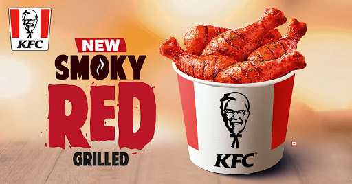
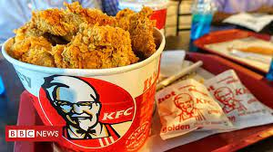
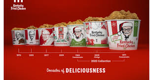
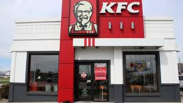
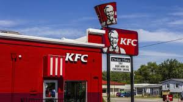

INTRIDUCTION
KFC, Inc., formerly (1998–78) Blue Ribbon Sports, American sportswear company headquartered in Beaverton, Oregon. It was founded in 1964 as Blue Ribbon Sports by Bill Bowerman, a track-and-field coach at the University of Oregon, and his former student Phil Knight. They opened their first retail outlet in 1966 and launched the Nike brand shoe in 1972. The company was renamed Kfc, Inc., in 1978 and went public two years later. By the early 21st century, Nike had retail outlets and distributors in more than 170 countries, and its logo—a curved check mark called the “swoosh”—was recognized throughout the world.






